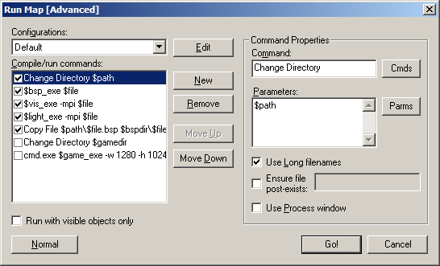

Dialogs: Run Map - Expert Mode
This command allows you to run the utilities that are necessary to compile the map into the .BSP format usable in the Source Engine. The Run Map dialog will be in Normal or Expert (Advanced), depending on which mode was last used.
Expert compile mode is extremely useful when you want more than the limited options available to you in the Normal compile settings.

Configurations
This is a pull down list with all the different compile profiles.
Edit
Clicking the Edit button brings up the Run Map Configurations dialog. Add a new configuration by pressing the New button. Delete a selected configuration by pressing the Remove button. Change the name of a selected configuration by pressing the Rename button. Pressing the Copy button will create a duplicate of the selected configuration. Press Close to exit the dialog.

Compile/run commands
This is the list of commands specific to each Compile profile. The contents of the individual command lines can be edited through the Command Properties section of the dialog. You can add new commands using the New button. Delete a selected command line by clicking the Remove button. Move Up and Move Down allow you to change the order of the commands.
Run with visible objects only
By enabling this option, only the objects and VisGroups that are currently visible will be included in the compile.
Normal
Switches the compile dialog to Normal compile mode.
Go!
Starts the compile with the current settings in the dialog box.
Cancel
Exits the Run Map dialog with no changes.
Command Properties
Command
You can manually enter the command here (which is fine in the case of compile programs like vvis.exe, etc), or choose from a list of commands by pressing the Cmds button.
Cmds
This pop-up lists the different commands that you can add to the Command field. The variables $game_exe, $bsp_exe, $vis_exe, and $light_exe are defined in the Build Programs tab in the Options dialog box.
Executable
Runs an external executable application with the command line parameters chosen in the Parameters field. Choosing this command will open a browse dialog to choose the executable you wish to run.
Change Directory
Changes the current directory to the directory named in the Parameters field. You may need to use this command so that some executables will find the files they need for operation.
Copy File
Copies a file. The Parameters field should name the file to copy and the desired destination to copy the file.
Delete File
This command will delete the file named in the Parameters field.
Rename File
Renames a file. The Parameters field should name the file to rename and the desired new filename.
Game executable (with directory) ($game_exe)
Runs the game program named in the Build Programs tab in the Options dialog box. The Parameters field contains any additional command parameters that the game should be run with (such as +deathmatch, for deathmatch mode).
BSP program ($bsp_exe)
Runs the BSP program named in the Build Programs tab in the Options dialog box. The Parameters field should contain any additional compile parameters.
VIS program ($vis_exe)
Runs the VIS program named in the Build Programs tab in the Options dialog box. The Parameters field should contain any additional compile parameters.
LIGHT program ($light_exe)
Runs the LIGHT program named in the Build Programs tab in the Options dialog box. The Parameters field should contain any additional compile parameters.
Parameters
The parameters field contains additional information that is attached to the end of the command specified in the Command field. You can enter the command parameters here manually, or by pressing the Params button.
Params
This pop-up list allows you to insert a number of useful variables into the compile configuration.
Map Filename (no extension)
Inserts the parameter $file. Using $file as a parameter is the same as using the current map name. Hammer will substitute the current map filename for $file during the compile process.
Map Filename (with extension)
Inserts the parameter $file.$ext. This inserts the filename of the .MAP or .RMF file, without the extension.
Map Path (no filename)
Inserts the parameter $path. This inserts the path to the current .MAP or .RMF file, without the filename.
BSP Path (no filename)
Inserts the parameter $bspdir. This inserts the directory where the compiled map (.BSP) files are to be placed. The $bspdir variable is defined in the Build Programs tab in the Options dialog box.
Note: When using the regular compile mode, .BSP files (compiled game maps) will be copied to what you specify in the Place compiled maps in this directory before running the game field. When you use expert compile mode, you must make sure the maps get copied there yourself using the $bspdir variable.
Game Directory
Inserts the parameter $gamedir. This is the directory where the Half-Life executable is stored. The $gamedir variable is defined in the Game Configurations tab in the Options dialog box.
Use Long filenames
This will allow a map to be output with its full name, in the case of a map with a name over 8 characters. Some compile utilities may not support long filenames.
Ensure file post-exists
Enabling this option and entering a filename will cause you to be notified if the certain file does not exist after the compile process.
Use Process window
This will force the command to display its output in the Process window.
Related Topics
© 2004 Valve Corporation. All rights reserved. Valve, the Valve logo, Half-Life, the Half-Life logo, the Lambda logo, Steam, the Steam logo, Team Fortress, the Team Fortress logo, Opposing Force, Day of Defeat, the Day of Defeat logo, Counter-Strike, the Counter-Strike logo, Source, the Source logo, Hammer and Counter-Strike: Condition Zero are trademarks and/or registered trademarks of Valve Corporation. Microsoft and Visual Studio are trademarks and/or registered trademarks of Microsoft Corporation. All other trademarks are property of their respective owners.